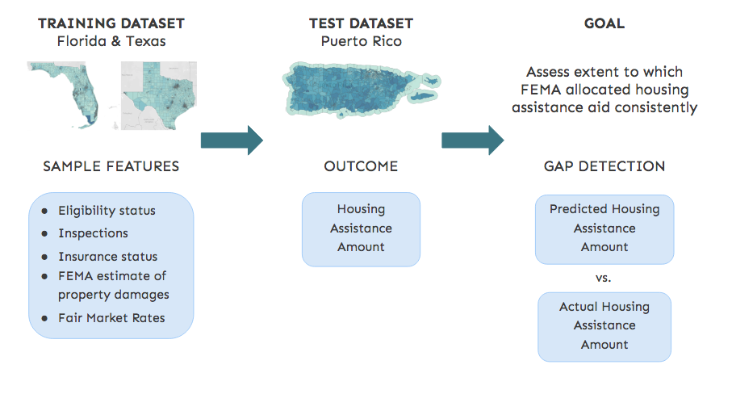
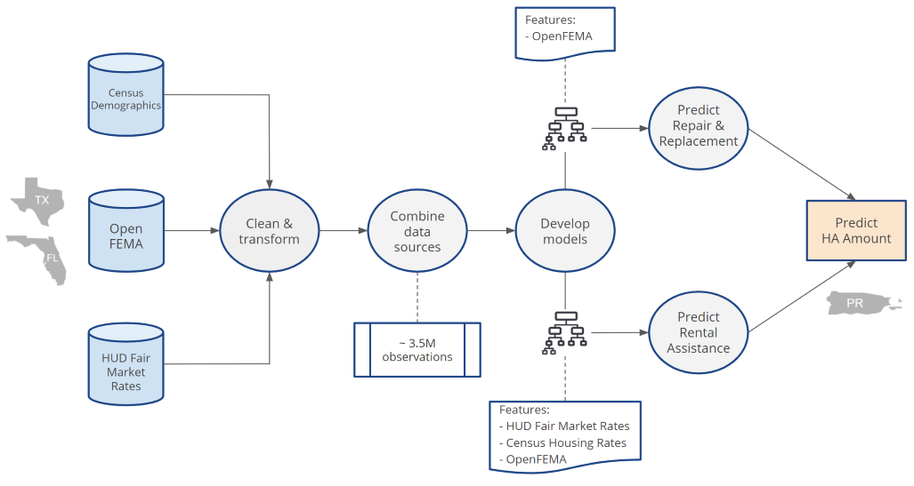
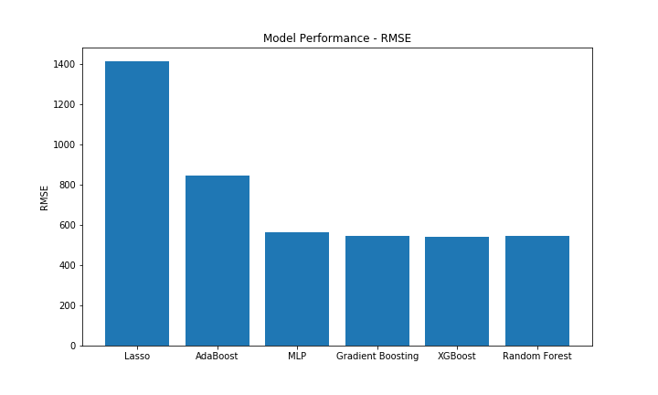
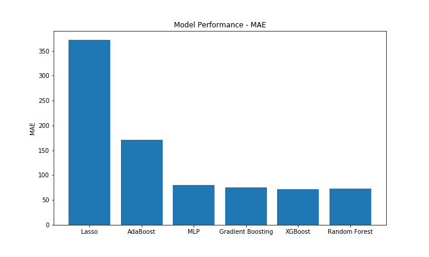

Approach
This research will leverage machine learning to train a model on the relevant features used by FEMA when assessing the amount of housing assistance aid applicants are entitled to receive. The model will be trained on hurricanes Irma and Harvey – which hit Florida and Texas, respectively – and will then predict the Housing Assistance (HA) Amount that Puerto Rico should have received in the wake of hurricane Maria, assuming equitable allocation of financial aid for those claimants that were inspected.
The premise which underlies this approach is that if the HA Amount estimated by the model is consistent with the payments received, then this is confirmation that FEMA’s HA Program has been administered consistently and that Puerto Rican residents had equal access to the provisions set forth in the guidelines. Alternatively, the magnitude of any difference between the predicted HA Amount and the actual HA Amount received, will indicate the extent to which there is inequitable access or allocation of housing assistance aid.

The modeling pipeline consists of several stages which can broadly be summarized as data ingestion, feature exploration and model development. The OpenFEMA data serves as the foundation for this research and was augmented with Census housing demographics and HUD Fair Market Rates to ensure the models could be trained on many of the pertinent features used by FEMA when assessing claims for financial aid, as outlined in the IHP Unified Guidelines. The datasets were then cleaned, deduplicated and combined to create a master database consisting of 3.2M records, primed for exploratory data analysis and model development.
The feature exploration phase was iterative in nature and the analysis of prediction errors was an integral component of the model development phase. Two models were ultimately selected – one which would predict the repair/replacement amounts associated with property damage, and another which would predict the rental assistance amount required to pay for temporary housing. Further details of the model selection process is outlined in the Model Performance section. Once the optimal models were determined, the HA Amount for Puerto Rico was predicted, and subsequently compared to the actual HA Amount allocated by FEMA.

A number of regressors were evaluated during the model development phase and performance was primarily evaluated using the Root Mean Squared Error (RMSE) and Mean Absolute Error (MAE). Additionally, models with regularization options were favored due to their ability to generalize well to unseen data. Linear models, decision trees, neural nets and various ensemble models (boosting/bagging) were under consideration initially. A brief description of each model is outlined below, followed by a summary of their performance against the in-sample (Florida/Texas) validation set.
Lasso Regression – performs L1 regularization to minimize the Residual Sum of Squares (RSS) plus the sum of absolute value of the magnitude of the coefficient weights. The effect is that the magnitude of the coefficients shrinks as alpha is increased, thereby reducing the feature space. It is an effective way to select those features that best describe the variance of the dependent variable. The OpenFEMA data contains a number of highly correlated variables, and lasso regression accounts for this by arbitrarily selecting one of the features and setting the coefficient size to zero for all others.
AdaBoost – a boosting algorithm in which a series of weak learners are created that iteratively build upon the preceding learner to optimize the loss function in the final model. Upon each iteration, AdaBoost adaptively adjusts the learner weights in favor of minimizing the largest prediction errors.
Multi-Layer Perceptron – an artificial neural network model which uses backpropagation for training. In the regression context, MLP has no activation function and so the Squared Error is the loss function minimized.
Gradient Boosting – an ensemble model that uses boosting methods to optimize the loss function (squared error) of the model. For instance, an initial weak learner is created that predicts HA Amount using some constant, in the next iteration a new weaker learner is created that is fitted to the residuals of the previous learner and so on and so forth. The result is an ensemble model that minimizes the loss function using a gradient descent algorithm.
XGBoost – an enhanced version of gradient boosting which has become popular due to its training speed and improved predictive power. The latter is achieved using the second order derivative of the loss function which yields more information about the direction of the gradient.
Random Forest – an ensemble of decision trees that uses bagging methods. In bagging, each tree is trained on a different sample of the full training set. Random Forests uses an extension of this called bootstrap sampling in which sampling with replacement takes place. A number of regularization options are available – for instance, selecting a subset of features at each split point when constructing trees, resulting in trees which are more varied across the ensemble. It is desirable for trees to remain unpruned as this increased variability produces less correlated predictions and errors. Predictions across all trees are then averaged, generating more accurate predictions than can be achieved using a single tree.
The following graphs display the in-sample performance of each candidate model on the held out validation set for Florida and Texas. Lasso and AdaBoost did not perform as well as the other models (higher RMSE and MAE) and as such were dropped from contention. The performance of the remaining models were generally equivalent and so the strengths and weaknesses of each model were taken into consideration in order to find the best option for our dataset and project.
 The Random Forest Regressor was optimized further using additional hyperparameters to ensure generalizability. Prior to predicting HA Amount on Puerto Rico, the model’s out-of-sample performance was assessed to demonstrate the accuracy and reliability of predictions on new and unseen data. For this, OpenFEMA data was obtained for North Carolina, which was hit by hurricane Florence in 2018. Our model’s performed equally well in-sample and out-sample, generating equivalent RMSEs and predictions within X.XX? of the actual HA Amounts allocated. These results demonstrate our model’s ability to reliably capture the two separate payment mechanisms which underpin FEMA’s Housing Assistance program - home repair-replacement and rental assistance. The accuracy of the predictions reinforces our assertion that the magnitude of any difference observed between the predicted HA Amount and the actual HA Amount received, will indicate the extent to which there is inequitable access or allocation of housing assistance aid in Puerto Rico.
| Dataset | HA Type | RMSE | Actual Total | Predicted Total | Difference |
|---|---|---|---|---|---|
| In-Sample (FL/TX) | |||||
| Repair/replacement | |||||
| Rental Assistance | 343.11 | $89.6M | $89.2M | -0.5% | |
| Total | |||||
| Out-Sample (NC) | |||||
| Repair/replacement | |||||
| Rental Assistance | 179,55 | $29.9M | $31.6M | 5.7% | |
| Total |